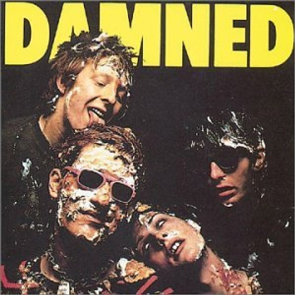

|
●タイトル |
| Damned Damned Damned(地獄に堕ちた野郎ども) | |
| ●コメント | |
| 77年にロンドンパンクで最初にリリースされた１ｓｔアルバム。DAMNED 独自の個性的独創的パンク・ロック！耳に残るあのいやらしい音楽、気味の悪さ、ユーモアさも含み、 中毒性の強い魔性のロックンロール！！DAMNEDしか出来ないこの音、体感しないのはもったいないです。 確実に聴くべきである一枚！！ 名曲｢NEW ROSE｣｢NEAT NEAT NEAT｣収録！ | |
|
 |
●タイトル |
| THE WORST OF THE DAMNED | |
| ●コメント | |
| 数あるＢＥＳＴ盤の中でもこれはかなり良かったです。もちろん『NEAT NEAT NEAT』、『LOVE SONG』『NEW ROSE』など名曲ぞろいです！！！ なんでおすすめっつーと、LIVEの曲が聴けるから！これがまた速くて、かっこいいんです!ハードコア って呼んでもいいのかってぐらいね。笑 | |